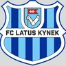
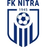
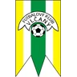
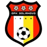
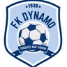
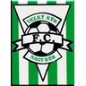

Tabuľky
Ročník 2026/27, poradie podľa Sportnetu.
VI. liga Stred
A-mužstvo
| # | Tím | Z | V | R | P | Skóre | B |
|---|---|---|---|---|---|---|---|
| 1 | 13 | 10 | 1 | 2 | 43:11 | 31 | |
| 2 | 13 | 9 | 2 | 2 | 34:15 | 29 | |
| 3 | 13 | 9 | 2 | 2 | 39:17 | 29 | |
| 4 | 13 | 7 | 2 | 4 | 22:18 | 23 | |
| 5 | 13 | 7 | 1 | 5 | 33:23 | 22 | |
| 6 | 13 | 6 | 2 | 5 | 30:26 | 20 | |
| 7 | OŠK Kolíňany | 13 | 5 | 4 | 4 | 34:21 | 19 |
| 8 | 13 | 6 | 0 | 7 | 21:29 | 18 | |
| 9 | 13 | 4 | 3 | 6 | 28:26 | 15 | |
| 10 | 13 | 4 | 2 | 7 | 16:24 | 14 | |
| 11 | 13 | 4 | 1 | 8 | 18:36 | 13 | |
| 12 | 13 | 3 | 2 | 8 | 20:29 | 11 | |
| 13 | 13 | 3 | 1 | 9 | 21:39 | 10 | |
| 14 | 13 | 2 | 1 | 10 | 17:62 | 7 |
IV. liga mladších žiakov U13
Mladší žiaci U13
| # | Tím | Z | V | R | P | Skóre | B |
|---|---|---|---|---|---|---|---|
| 1 | 9 | 8 | 1 | 0 | 75:18 | 25 | |
| 2 | FK Alekšince | 9 | 7 | 0 | 2 | 47:22 | 21 |
| 3 | 9 | 7 | 0 | 2 | 67:36 | 21 | |
| 4 | 9 | 6 | 2 | 1 | 39:13 | 20 | |
| 5 | 9 | 4 | 1 | 4 | 40:34 | 13 | |
| 6 | 9 | 3 | 1 | 5 | 26:50 | 10 | |
| 7 | 9 | 3 | 1 | 5 | 40:39 | 10 | |
| 8 |  LATUS | 9 | 2 | 2 | 5 | 35:24 | 8 |
| 9 | 9 | 1 | 0 | 8 | 17:94 | 3 | |
| 10 | 9 | 0 | 0 | 9 | 13:69 | 0 | |
| 11 | 0 | 0 | 0 | 0 | 0:0 | 0 |
III. liga prípraviek U11
Prípravka U11
| # | Tím | Z | V | R | P | Skóre | B |
|---|---|---|---|---|---|---|---|
| 1 | 20 | 20 | 0 | 0 | 136:7 | 60 | |
| 2 | 20 | 19 | 1 | 0 | 118:9 | 58 | |
| 3 |  FK Nitra B | 19 | 17 | 1 | 1 | 112:9 | 52 |
| 4 |  FK Vlčany | 16 | 15 | 1 | 0 | 136:10 | 46 |
| 5 | 20 | 14 | 4 | 2 | 83:17 | 46 | |
| 6 | 16 | 15 | 0 | 1 | 101:8 | 45 | |
| 7 |  OFK Golianovo | 20 | 14 | 3 | 3 | 59:21 | 45 |
| 8 | ŠK Tesárske Mlyňany | 15 | 14 | 0 | 1 | 57:14 | 42 |
| 9 | 15 | 12 | 2 | 1 | 67:19 | 38 | |
| 10 | 16 | 11 | 1 | 4 | 57:39 | 34 | |
| 11 | OFK Branč | 16 | 10 | 1 | 5 | 53:22 | 31 |
| 12 | OŠK Kolíňany | 19 | 10 | 1 | 8 | 52:53 | 31 |
| 13 | 16 | 10 | 0 | 6 | 54:26 | 30 | |
| 14 | 12 | 9 | 2 | 1 | 51:10 | 29 | |
| 15 | 16 | 9 | 2 | 5 | 57:50 | 29 | |
| 16 | TJ AC NOVAN Nová Ves nad Žitavou | 19 | 9 | 2 | 8 | 45:32 | 29 |
| 17 | 16 | 9 | 2 | 5 | 58:43 | 29 | |
| 18 | 16 | 8 | 2 | 6 | 47:39 | 26 | |
| 19 | 16 | 7 | 4 | 5 | 35:28 | 25 | |
| 20 | 16 | 8 | 1 | 7 | 39:40 | 25 | |
| 21 | 15 | 8 | 0 | 7 | 62:30 | 24 | |
| 22 | 15 | 8 | 0 | 7 | 42:49 | 24 | |
| 23 | 15 | 7 | 0 | 8 | 30:59 | 21 | |
| 24 | 18 | 6 | 2 | 10 | 27:68 | 20 | |
| 25 | 16 | 6 | 1 | 9 | 45:57 | 19 | |
| 26 | 16 | 6 | 0 | 10 | 39:63 | 18 | |
| 27 |  FK DYNAMO Trnovec nad Váhom | 20 | 5 | 2 | 13 | 34:67 | 17 |
| 28 | 16 | 5 | 2 | 9 | 27:47 | 17 | |
| 29 | 20 | 5 | 2 | 13 | 38:69 | 17 | |
| 30 | 15 | 4 | 3 | 8 | 24:33 | 15 | |
| 31 | 19 | 4 | 0 | 15 | 37:92 | 12 | |
| 32 | 12 | 3 | 0 | 9 | 14:38 | 9 | |
| 33 | LATUS B | 18 | 3 | 0 | 15 | 25:85 | 9 |
| 34 | 16 | 3 | 0 | 13 | 28:92 | 9 | |
| 35 | 19 | 2 | 0 | 17 | 25:86 | 6 | |
| 36 | 16 | 2 | 0 | 14 | 13:80 | 6 | |
| 37 | 16 | 1 | 2 | 13 | 15:88 | 5 | |
| 38 | 20 | 1 | 1 | 18 | 19:105 | 4 | |
| 39 | 20 | 1 | 1 | 18 | 11:103 | 4 | |
| 40 | TJ Družstevník Ivanka pri Nitre | 16 | 1 | 0 | 15 | 9:75 | 3 |
| 41 | 0 | 0 | 0 | 0 | 0:0 | 0 | |
| 42 | 11 | 0 | 0 | 11 | 7:106 | 0 |
III. liga prípraviek U9
Prípravka U9
| # | Tím | Z | V | R | P | Skóre | B |
|---|---|---|---|---|---|---|---|
| 1 | OFK Golianovo | 18 | 15 | 0 | 3 | 75:14 | 45 |
| 2 |  FC Veľký Kýr | 15 | 14 | 0 | 1 | 87:14 | 42 |
| 3 | 14 | 13 | 1 | 0 | 115:5 | 40 | |
| 4 | 19 | 12 | 3 | 4 | 87:20 | 39 | |
| 5 | 14 | 13 | 0 | 1 | 67:15 | 39 | |
| 6 | 14 | 12 | 1 | 1 | 67:12 | 37 | |
| 7 | 19 | 12 | 0 | 7 | 62:40 | 36 | |
| 8 | 14 | 11 | 2 | 1 | 59:14 | 35 | |
| 9 | 14 | 11 | 2 | 1 | 57:19 | 35 | |
| 10 | 17 | 11 | 1 | 5 | 84:41 | 34 | |
| 11 | 13 | 10 | 1 | 2 | 64:21 | 31 | |
| 12 | 16 | 10 | 0 | 6 | 38:52 | 30 | |
| 13 | 18 | 10 | 0 | 8 | 55:32 | 30 | |
| 14 | 15 | 10 | 0 | 5 | 43:29 | 30 | |
| 15 | 19 | 9 | 1 | 9 | 60:52 | 28 | |
| 16 | 18 | 8 | 2 | 8 | 37:40 | 26 | |
| 17 | 11 | 8 | 1 | 2 | 40:10 | 25 | |
| 18 | 13 | 7 | 3 | 3 | 33:16 | 24 | |
| 19 | 14 | 7 | 1 | 6 | 29:33 | 22 | |
| 20 | FK Nitra B | 18 | 7 | 0 | 11 | 44:61 | 21 |
| 21 | 19 | 6 | 3 | 10 | 29:49 | 21 | |
| 22 | 18 | 6 | 0 | 12 | 41:38 | 18 | |
| 23 | 17 | 5 | 0 | 12 | 28:50 | 15 | |
| 24 | 14 | 4 | 0 | 10 | 18:39 | 12 | |
| 25 | FK Vlčany | 14 | 3 | 2 | 9 | 21:37 | 11 |
| 26 | 13 | 3 | 1 | 9 | 11:42 | 10 | |
| 27 | 14 | 3 | 1 | 10 | 26:77 | 10 | |
| 28 | 14 | 1 | 2 | 11 | 5:76 | 5 | |
| 29 | 11 | 1 | 1 | 9 | 14:58 | 4 | |
| 30 | 14 | 1 | 1 | 12 | 9:55 | 4 | |
| 31 | FK DYNAMO Trnovec nad Váhom | 11 | 1 | 0 | 10 | 5:87 | 3 |
| 32 | 11 | 0 | 1 | 10 | 6:65 | 1 | |
| 33 | TJ Družstevník Šurianky | 15 | 0 | 1 | 14 | 13:109 | 1 |
| 34 | Futbalový klub FK Babindol | 8 | 0 | 0 | 8 | 0:24 | 0 |
| 35 | 14 | 0 | 0 | 14 | 3:86 | 0 |
III. liga prípraviek U7
Prípravka U7
| # | Tím | Z | V | R | P | Skóre | B |
|---|---|---|---|---|---|---|---|
| 1 | 9 | 9 | 0 | 0 | 73:3 | 27 | |
| 2 | 9 | 7 | 0 | 2 | 45:17 | 21 | |
| 3 | TJ AC NOVAN Nová Ves nad Žitavou | 9 | 5 | 1 | 3 | 38:23 | 16 |
| 4 | 9 | 5 | 0 | 4 | 28:32 | 15 | |
| 5 | 9 | 3 | 1 | 5 | 22:33 | 10 | |
| 6 | 9 | 2 | 1 | 6 | 12:35 | 7 | |
| 7 | ŠK Slovan Neverice | 9 | 2 | 0 | 7 | 7:47 | 6 |
| 8 | 9 | 1 | 1 | 7 | 8:43 | 4 |